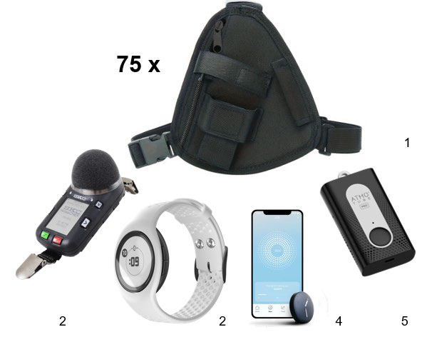

CONTINUUM · modular exposure monitoring
An interdisciplinary UCL project developing a modular wearable system to monitor personal exposure to light, alongside noise, air quality, temperature and physiological signals across everyday environments.
As part of the research team, I support the pilot across the study lifecycle—from equipment preparation and sensor checks to deployment and field data collection. I also participate in discussions around data quality, multi-sensor integration and analysis planning, gaining practical insight into the Python-based workflows used to organise, harmonise and time-align recordings.
